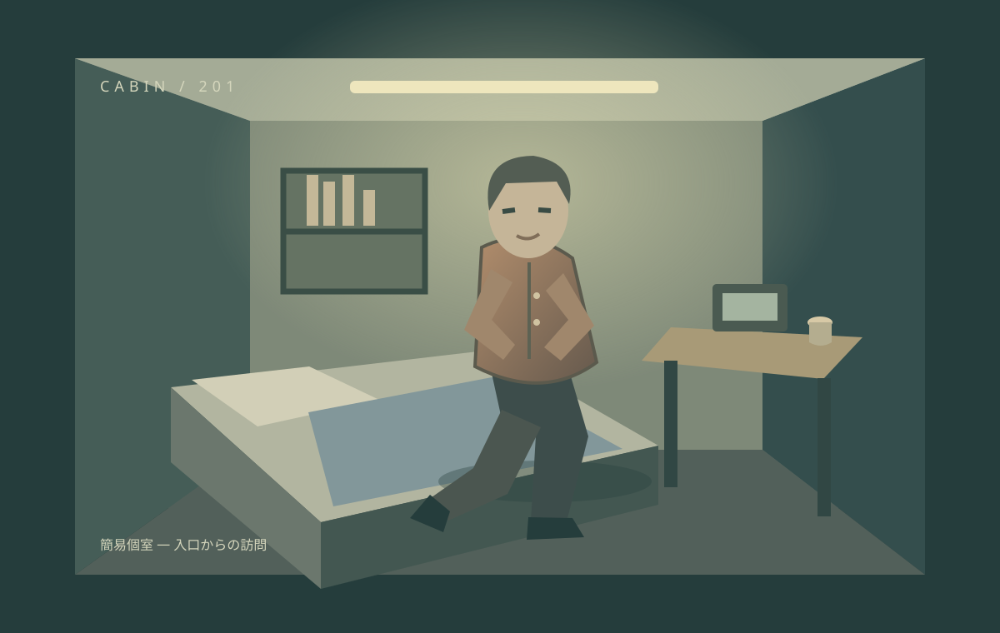

ARCHITECTURE / TRANSPORT LAB 第七段階 / STAGE 07

第三層の固定EV乗場から探索を開始します。
40搬送体・50チャンクを三つの生活階と遠隔区域に配置。H1/H2は二連結の広間、M1は第一層と第二層の間を移動します。J1/J2/J3/C0は廊下単独です。外形8×8×6mと、低い居室から高い広間までの室内高を分けています。
通常扉は E または近くからクリックで操作する内開きの扉です。店主は第三層T1北東。住人はR3南西の狭い個室にいます。R3の廊下側から閉じた扉を操作すると、個室の一枚絵へ切り替わります。話す操作で住人と会話でき、会話後も画像に留まれます。「廊下へ戻る」またはSで退出します。会話は E・画面の「次へ」で進行し、最後の行で自由移動に戻ります。「戻る」またはSでも終了。音声ボタンで控えめな機械音を開始できます。
W A S D 移動3.6m/秒 Shift 高速5.2m/秒 ← → 回転 ドラッグで視線 E 扉・EV。搬送速度とは独立しています。
住戸301と生活用品店は全周期で同じ位置です。Aは南側へ迂回、Bは保管していたT字廊下C0が間へ挿入され直通、CはC0が保管に戻り再び迂回します。右のA/B/C平面図と床の経路線を比較してください。
店舗の東開口を通るとE1〜E4の追加空間へ進めます。北側の扉を開けて個室・読書室・作業室へ入れます。各搬送体は周期ごとに生活階を入れ替わります。旧第六段階は完全保存・比較版として保存しています。
V1は3チャンクL型、V2は2チャンク、V3は単独住宅です。Aで三層の居住区がEVを介してつながり、Bでは居室が別の階や南側へ移ります。予備点検廊下Q1は2チャンクを一体搬送し、Bで第一層へ挿入。W1の旧設備室へ歩けます。幅広の共用前室と、幅1.38m・斜行区間のある点検通路を比較してください。
遠隔区域は徒歩では本施設へつながりません。第三層東翼の南にあるS1へ入り、A→Bで同乗して渡ります。D1〜D4を探索したらB→Cで帰還。泉は固定密閉槽で、BN1〜BN4が触手を伸ばして全体を中和します。Eで供給器官を利用。BN4のN4は回転ベイで90度回り、PA/PBの違う方向へ接続します。俯瞰の注目区域と平面図範囲を切り替えて観察できます。
自動搬送は待機40秒が初期値です。警告後に孤立予定区画から実経路を通って退避し、会話・個室訪問も必要時だけ終了します。実経路がなければ安全エラーを表示します。EVは乗場でEを押して呼び、実際に乗り込んでからEで閉扉。扉が閉じてから表示される行先階をクリックします。キャンセルは同じ階で開扉します。第一層のK1・K2・M1を探索できます。例外区画からは再接続ボタンで次の物理搬送を要求できます。
同程度・一回り・二回りで完成した生活域は共通。保管場所と一時退避方法を変え、全外形を離隔0.2mで連続検査します。空欄には床がなく、開口は個別に閉鎖します。通常の循環は連続移動です。条件適用・デバッグ復帰は検証専用の初期化です。
接合トンネルの側壁・屋根、低い開口の上部見切り、6m外周壁を実形状として生成。EVは固定連続昇降路と閉鎖するかご扉を備え、乗場の着床時だけ開きます。
第七段階の報告・図面 ↗ ／ 第六段階 ↗ ／ 第五段階 ↗ ／ 第四段階 ↗ ／ 第三段階 ↗ ／ 第二段階 ↗ ／ 第一段階 ↗ ／ ソース ZIP ↓
本編とは独立した実験です。初期化とデバッグ復帰は通常の物理移動ではありません。